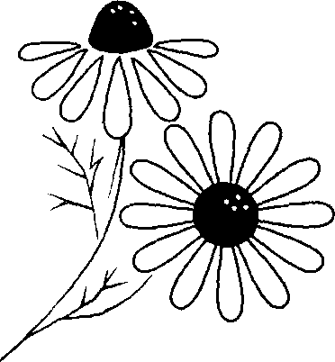
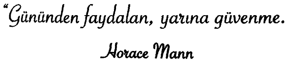

Gabriel Garda Marquez’in Veda Mektubu
Tanrı bir an için paçavradan bebek olduğumu unutup can vererek beni ödüllendirse, aklımdan geçen her şeyi dile getiremeyebilirdim ama en azından dile getirdiklerimi ayrıntısıyla aklımdan geçirir ve düşünürdüm.
Eşyalann maddî yönlerine değil, anlamlarına değer verirdim.
Az uyur, çok rüya görür, gözümü yumduğum her dakikada, 60 saniye boyunca ışığı yitirdiğimi düşünürdüm.
İnsan aşktan vazgeçerse yaşlanır.
Başkaları durduğu zaman yürümeye devam ederdim. Başkaları uyurken uyanık kalmaya gayret ederdim. Başkaları konuşurken dinler, çikolatalı dondurmanın tadından zevk almaya bakardım.
Eğer Tanrı bana birazcık can verse, basit giyinir, yüzümü güneşe çevirir, sadece vücudumu değil, ruhumu da tüm çıplaklığıyla açardım.
Tanrım, eğer bir kalbim olsaydı; nefretimi buzun üzerine kazır ve güneşin yüzünü göstermesini beklerdim.
Gökyüzündeki aya, yıldızlar boyunca Van Gogh resimleri Çizer, Benedetti şiirleri okur ve serenatlar söylerdim.
Gözyaşlarımla gülleri sular, vücuduma batan dikenlerinin acısını hissederek dudak kırmızısı taç yapraklarından öpmek isterdim.
Tanrım bir yudumluk yaşamım olsaydı...
Gün geçmesin ki, karşılaştığım tüm insanlara onları sevdiğimi söylemeyeyim. Tüm kadın ve erkekleri, en sevdiğim insanlar oldukları konusunda birer birer ikna ederdim. Ve aşk içinde yaşardım.
Erkeklere, yaşlandıkları zaman aşkı bırakmalarının ne kadar yanlış olduğunu anlatırdım. Çünkü insan aşkı bırakınca yaşlanır.
Çocuklara kanat verirdim. Ama uçmayı kendi başlarına öğrenmelerine olanak sağlardım.
Yaşlılara ise ölümün yaşlanma ile değil, unutma ile geldiğini öğretirdim.
Ey insanlar! Sizlerden ne kadar da çok şey öğrenmişim. Tüm insanların, mutluluğun gerçekleri görmekte saklı olduğunu bilmeden, dağların zirvesinde yaşamak istediğini öğrendim.
Yeni doğan küçük bir bebeğin, babasının parmağını sıkarken aslında onu kendisine sonsuza dek kelepçeyle mahkûm ettiğini öğrendim.
Sizlerden çok şey öğrendim. Ama bu öğrendiklerim pek işe yaramayacak. Çünkü hepsini bir çantaya kilitledim. Mutsuz bir şekilde...
Artık ölebilir miyim?
ÖnSöz
Papatya Kokulu Hikâyeler adlı kitabı sizlere sunmaktan mutluluk duyuyoruz. Sizler için en sevdiğim, okurken yüreğimi ısıtan öyküleri seçtim ve her bir öykünün bir anlamda özünü yakaladım.
Bu kitabı ister kendinize ister armağan olarak bir arkadaşınıza, annenize, çocuğunuza almış olun; yüreğinizi her an ısıtacak, ruhunuzu harekete geçirecek ve içinizdeki kıvılcımı tutuşturacak bir kitabın elinizin altında olduğundan emin olabilirsiniz. Bu kitaptaki öykülerin tümü sizi derinden etkileyecek ve insan olmanın önemini bir kez daha anımsatacaktır size.
Yakın zaman önce yapılan bir araştırma öykülerin okundukları zaman sağbv' 'ararlı ve çok olumlu ruhsal tepkiler uyandırdığı ortaya çıka; . ı ıştır.
Okuduğunuz öyküler arkadaşlarınıza ve ailenize daha çok sevgi ve şefkatle yaklaşmanızı sağlayacak ve sıkıntılı dönemlerinizde sizi rahatlatacaktır.
Sizlere bu kitabı hediye olarak sunuyorum. Umarım sîzlerin de arkadaşlarınıza verebileceğiniz güzel bir hediye olacaktır.
Ender Haluk Derince


Yirmi bir senelik evlilikten sonra aşk ışıltısını’ canlı tutmanın yeni bir yolunu buldum. Bir süre önce, başka bir kadınla çıktım ve bu aslında eşimin fikriydi. Bir gün eşim, beni çok şaşırtarak, “Biliyorum ki onu seviyorsun,” dedi.
Şiddetle itiraz ettim:
“Fakat ben seni daha çok seviyorum!”
“Biliyorum ama aynı zamanda onu da seviyorsun. Ona da zaman ayırman gerekiyor.”
Karımın, ziyaret etmemi istediği ‘öbür kadın on dokuz yıldır dul olan annemdi. İşimin yoğunluğu ve üç çocuğumun beklentileri nedeniyle annemi görme fırsatım pek olamıyordu. O akşam annemi yemeğe ve ardından sinemaya davet ettim. Endişelendi ve hemen, “İyi misin, her şey yolunda mı?” diye sordu.
Annem de geç saatte gelen bir telefonun veya sürpriz bir davetin mutlaka kötü bir anlamı olacağından şüphelenen tipte kadınlardandı.
“Seninle beraber ikimizin biraz zaman geçirmemizin güzel olacağını düşündüm,” diye yanıtladım.
“Sadece ikimiz mi?”
Biraz düşündü ve “Çok isterim,” diye cevap verdi.
O cuma, iş çıkışı onu almaya giderken kendimi biraz gergin hissediyordum. Eve vardığımda fark ettim ki o da randevumuzdan ötürü hafif gergin görünüyordu. Kapısının önünde, paltosunu çoktan giymiş bir şekilde bekliyordu. Saçlarını yaptırmıştı ve üzerinde babamla kutladıkları son evlilik yıldönümlerinde giydiği elbise vardı.
Bana melekler kadar ışıltılı bir yüzle gülümsedi. Arabaya bindiğimizde:
“Arkadaşlarıma oğlumla dışarı çıkacağımı söyledim ve gerçekten çok etkilendiler,” dedi. “Randevumuzun nasıl geçtiğini duymak için sabırsızlanıyorlar.”
Gittiğimiz restoran, çok şık olmasa da sevimli, sıcak ve servisin kaliteli olduğu bir mekândı. Annemse bir kraliçe edasıyla koluma girdi. Yerimize oturduktan sonra ona menüyü okumam gerekmişti; çünkü küçük yazıları göremiyordu. Ben daha menünün ortalarındayken annemin nemli gözlerle ve nostaljik bir gülüşle bana bakmakta olduğunu fark ettim:
“Eskiden, sen küçükken menüleri okuyan bendim, sense meraklı bakışlarla beni dinlerdin,” dedi.
Ben de gülümseyip, “O zaman, şimdi senin rahat rahat oturma sıran ve ben de okuyarak borcumu ödeyebilirim,” dedim.
Yemek boyunca muhabbetimiz çok güzeldi, sıra dışı hiçbir şey olmadı ama eskilerden ve hayatlarımızdaki yeniliklerden bahsederek kaybettiğimiz zamanın birazım telafi etmeye çalıştık. O kadar çok konuştuk ve eğlendik ki film saatini kaçırdık.
Akşam annemi bırakırken, “Seninle tekrar çıkmak isterim ama ancak bu sefer benim seni davet etmeme izin verirsen,” dedi ve bir akşam tekrar buluşmakta karar kıldık.
Eve geldiğimde eşim yemeğin nasıl geçtiğini sordu:
“Çok güzeldi,” dedim. “Düşünebileceğimin çok üstündeydi.”
Birkaç gün sonra annem aniden ciddi bir kalp krizi sonucu vefat etti. Bu o kadar ani gerçekleşmişti ki onun için bir şey daha yapma şansım olmamıştı. Birkaç zaman sonra evime, annemle yemek yediğimiz restorandan, ödenmiş iki kişilik bir yemek faturası ve üzerine iliştirilmiş bir not yollandı:
“Oğlum, bu faturayı önceden ödedim; çünkü seninle kararlaştırdığımız randevu gününe gelemeyeceğimden neredeyse yüzde yüz emindim. Yine de iki kişilik bir yemek ayarladım; çünkü bu sefer eşinle beraber gitmenizi istiyorum. Seninle olan o günkü randevumuzun benim için ne anlam ifade ettiğini bilemezsin. Seni Seviyorum.”
O esnada, ‘Seni Seviyorum’ demenin ve hayatta değer verdiğimiz insanlara hak ettikleri zamanı ayırmanın önemini anladım. Hayatta hiçbir şey ailenizden daha önemli değildi.-. Onlara hakları olan zamanı ve ilgiyi verin; çünkü böyle şeyleri erteleyip durursanız uygun zamanı’ asla bulamayabilirsiniz.